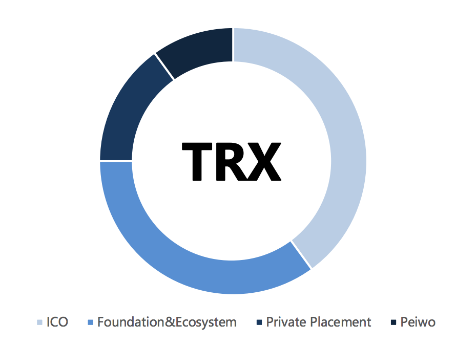
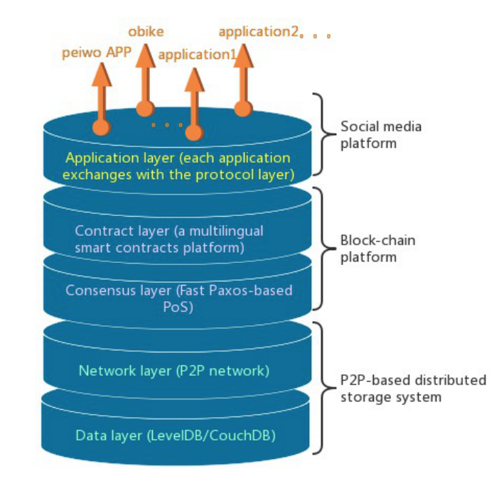
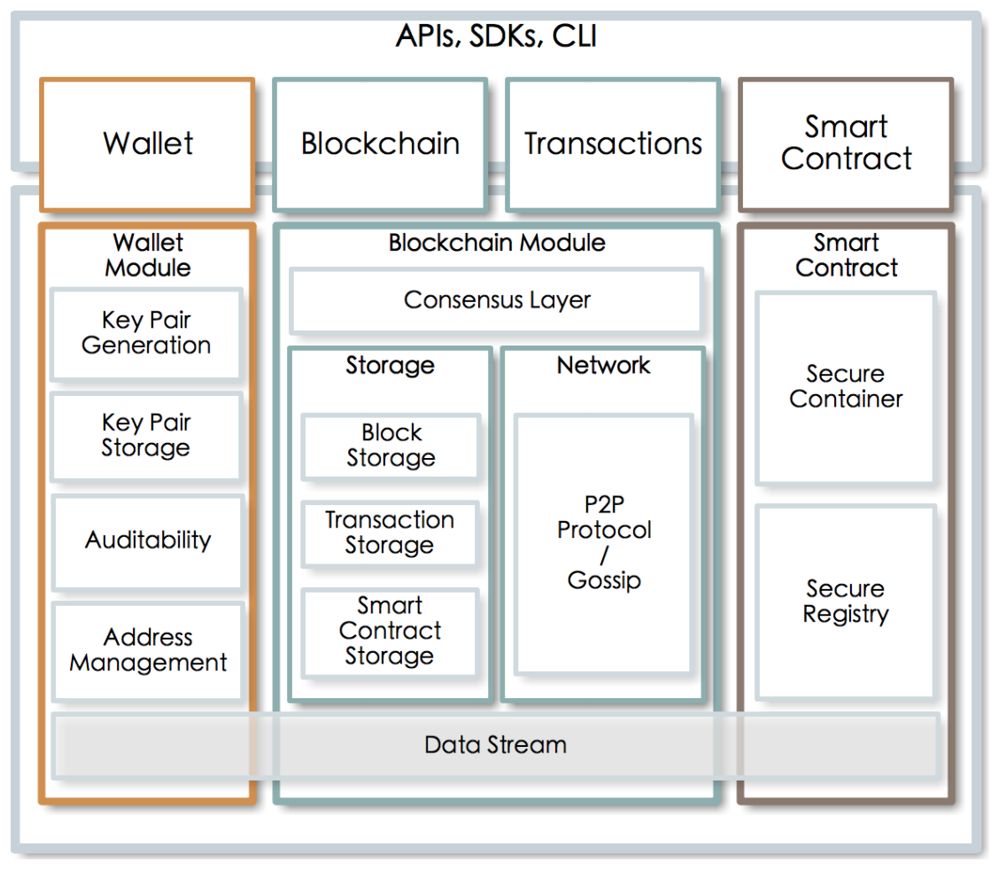
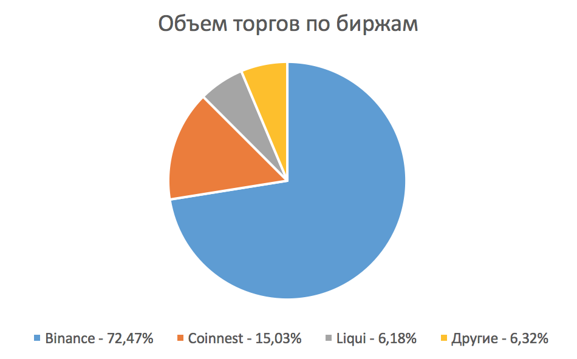
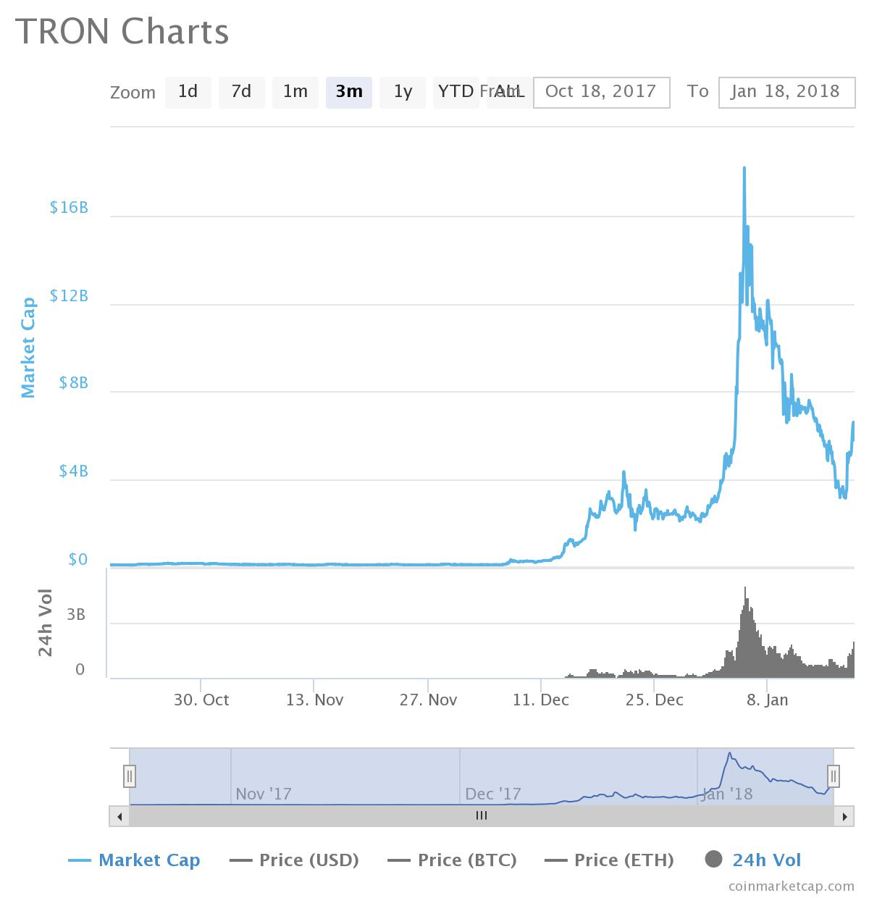
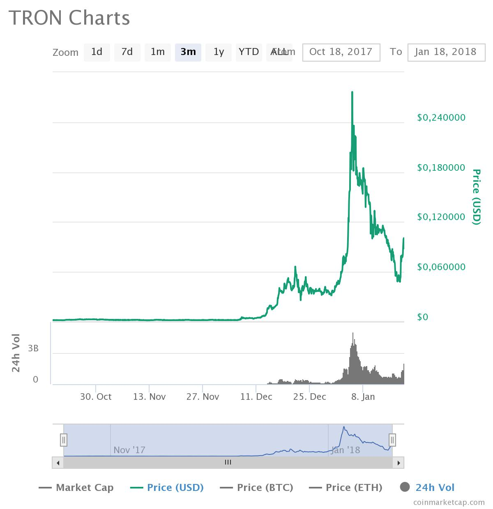
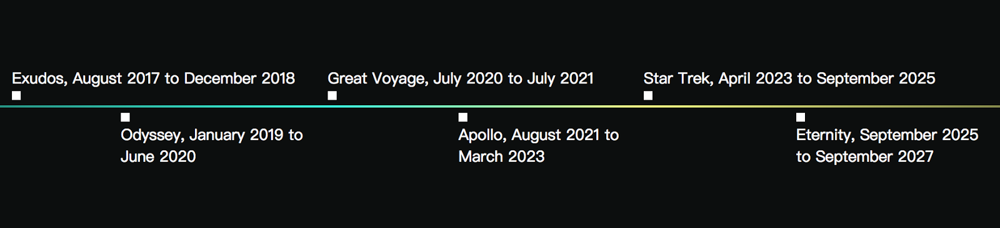

TRON это децентрализованный протокол на основе блокчейн, целью которого является создание международной бесплатной развлекательной платформы. Благодаря технологии блокчейн весь развлекательный контент (онлайн-игры, казино, видео и т.п.) будет храниться распределенно.
Протокол позволяет пользователям публиковать, хранить контент, реализовывать возможность подписки на него. Пользователи могут создавать собственные цифровые активы. Всё это должно сформировать децентрализованную развлекательную экосистему, в которой люди могут предоставлять или получать интересный им контент. Благодаря децентрализации и принципу p2p, обеспечивающему прямое взаимодействие между поставщиками и пользователями, контент-провайдерам будет не нужно оплачивать дорогостоящую публикацию контента на централизованных платформах таких как, например, на App Store и Google Play. К тому же благодаря технологии блокчейн для любого контента будет четко определен его владелец. Помимо контентного наполнения пользователи станут участниками своеобразной социальной сети с возможностью общения, использования токенов и т.п.
Первым совместимым с TRON продуктом должно стать приложение Piewo APP (приложение для трансляции аудио в режиме реального времени с более 10 млн. пользователей).
Основной токен проекта - TRONIX (TRX), который является связующим элементом между пользователями платформы
В настоящий момент рынок развлекательного контента неизменно растет и меняется в связи с появлением новых технологий и тенденций к созданию платформ-агрегаторов, где пользователь может получить все необходимое в одном месте. С этой точки зрения платформа TRON решает много проблем пользователей, таких как регистрация большого количества аккаунтов на разнообразных ресурсах, небезопасность хранения контента, необходимость покупки цифровых токенов разных игр/ресурсов и т.д. В случае успешного развития проекта пользователи получат удобную развлекательную платформу, которая помимо прочего является децентрализованной, причем децентрализованной и с точки зрения хранения данных, и с точки зрения управления системой. Идея свободы создания и распространения контента имеет широкий отклик у пользователей.
К возможным сценариям использования платформы можно отнести:
создание азартных онлайн-игр, которые будут оснащены нативной цифровой валютой;
создание развлекательных онлайн приложений;
приложения для знакомств с возможностями онлайн-чатов, в том числе аудио- и видео-;
filesharing для развлекательного контента и т.д.
Проект TRON несколько раз подвергался критике по разным направлениям.
Плагиат White Paper
7 января 2018 года проект обвинили в наличии плагиата в англоязычной White Paper. После этого основатель TRON написал в Twitter, что официальная версия документа есть только на китайском языке, остальные являются переводом волонтеров и содержат неточности (несмотря на то, что английская версия была представлена на официальном сайте). Более подробно эта ситуация рассмотрена в разделе “Анализ Road Map и White Paper”.
Кроме White Paper, в которой был найден плагиат, в сети интернет присутствует техническая White Paper. Ее отношение к проекту непонятно, но данные в ней соотносятся с данными в псевдоофициальной англоязычной White Paper.
Стоит учитывать, что анализ функциональных и архитектурных особенностей системы сделан на базе англоязычных документов, достоверность которых теперь находится под вопросом. С большой долей вероятности вся англоязычная информация в интернете относительно системы также базируется на них.
Спекуляция токенов TRX
Стоимость токенов TRX стремительно росла и это подогревалось грамотным маркетингом проекта TRON. Скачки роста курса зачастую были вызваны ажиотажем вокруг твиттера основателя проекта Justin Sun, в котором он сообщал о предстоящих мероприятиях, партнерствах и т.п.
После резкого роста курса токена в сети появилась запись https://steemit.com/bitcoin/@futuredreamer/tron-trx-ceo-justin-sun-sold-6-billion-trx-scam-exit, в которой приводятся подозрения относительно основателя проекта в продаже 6 млрд. токенов TRX (эквивалентные примерно $300’000’000). Помимо предположений в его желании зафиксировать прибыль пользователей смутило, что токены команды не заморожены, как говорилось во время ICO, а могут свободно выводиться с кошелька.
Justin Sun отрицает совершение этих сделок и говорит, что их совершил маркет-мейкер для поддержания ликвидности токена (возможности закрытия сделок, а не продажи).
После этого пользователи обратили внимания, что счет, с которого ведется продажа TRX, привязан к аккаунту в нашумевшей игре Cryptokittties с ником justinpets. Justin Sun ответил в Twitter «Забавная вещь: маркетмейкера зовут так же, как и меня, и он использовал это имя при регистрации в @CryptoKitties. Это крайнее проявление непрофессионализма. При регистрации я использую своё китайское имя «Ючен», а не английское имя»
После этого, спустя некоторое время, Justin Sun выложил видео, в которое попал его профиль в игре похожей на Cryptokittties с ником justinsun, чем снова подверг свои слова сомнениям.
Подробнее:
https://steemit.com/bitcoin/@futuredreamer/tron-trx-ceo-justin-sun-sold-6-billion-trx-scam-exit
https://ttrcoin.com/tron-padaet-na-fone-sluhov-o-tom-chto-osnovatel-proekta-prodal-6-mlrd-trx.2183/
https://cryptocurrency.tech/tsena-tron-padaet-iz-za-sluhov-o-prodazhe-vseh-tokenov-ee-osnovatelem/
Механизмы и принципы эмиссии
Токены проекта
Официальной валютой/токеном системы TRON будет являться токен TRONIX. В системе будет существовать несколько видов токенов, являющихся его производными.
TRONIX (TRX)
Базовый токен, который необходим для использования экосистемы TRON.
Общее количество выпущенных токенов - 10 миллиардов
TRON Power (TP)
TP - это заблокированный TRONIX. Пользователи могут приобретать TP, блокируя TRONIX на своих аккаунтах. TP - по сути это TRONIX с правом голосования, пользователи с этим токеном имеют привилегии в экосистеме и участвуют в ее формировании. Для поддержки пользователей с TP, которые рассматривают систему TRON в долгосрочной перспективе, а не пытаются спекулировать на скачках курса, как это происходит сейчас в мире криптовалют, со временем им будут выдаваться дополнительные TP в качестве вознаграждения. Токены TRON Power не могут ни передаваться, ни продаваться, и, следовательно, не торгуются на биржах.
Токен TRON 20
На базе блокчейна TRON владельцы контента могут свободно выпускать свои собственные цифровые токены, проводя подобие ICO, используя стандарт токена TRON 20. В тоже время, другие пользователи смогут покупать и пользоваться этими выпущенными токенами. Таким образом, TRON 20 это стандарт токена, видимо можно провести аналогию со стандартом токена ERC20 на базе блокчейна Ethereum.
ICO
Во время ICO проекта TRON (сентябрь 2017) осуществлялась продажа токенов TRONIX (TRX), выпущенных на блокчейне Ethereum. После запуска основной сети TRON эти токены будут обменены в соотношении 1:1 на нативные токены проекта, выпущенные непосредственно на блокчейне TRON.
Характеристики токенов, выпущенных во время ICO:
100 миллиардов (разовая эмиссия)
выпущен на Ethereum, стандарт ERC20
во время ICO продано 400’000’000 TRX. (40%)
Стоимость во время ICO:
1 TRX = 0,0019 USD (0,00000038 BTC)
Распределение токенов:
40% публичная продажа во время ICO
35% TRON Foundation и развитие экосистемы
15% приватная продажа
10% оплата Peiwo Huanle (Beijing) Technology Co., Ltd., которые будут первыми внедрять экосистему TRON в свое развлекательное приложение.
Проект TRON существует под руководством некоммерческой организации TRON Foundation, зарегистрированной в юрисдикции Сингапур, и является юридическим лицом, не имеющим коммерческого интереса и направленным на поддержку развития экосистемы. Прибыль, получаемая фондом, считается “излишком” и будет удерживаться для организации и ее деятельности. Члены фонда никогда не будут участвовать в распределении прибыли. Стоит отметить, что несмотря на все вышесказанное, распределение токенов, при котором 35% остается за руководством проекта, считается не самым надежным в сфере криптовалют. Зачастую отметку в 15% токенов для команды проекта считают высшей границей.
Архитектура системы
На данный момент, сложно оценить принципы работы блокчейна и экосистемы TRON, так как в интернете доступно несколько версий White Paper проекта, которые сильно отличаются между собой и ни одна из которых не является официальной (подробнее в разделе “Анализ Road Map и White Paper”).
Исходя из более технической White Paper, можно привести следующие сведения:
Social media platform - уровень приложений
Блокчейн-платформа
- уровень смарт-контрактов (на разных языках)
- уровень консенсуса (механизм POS на базе алгоритма Fast Paxos Подробнее о Paxos: https://habrahabr.ru/post/222825/)
Распределенное P2P хранилище
- сетевой уровень
- уровень данных
Уровень программного обеспечения будет разделен на две части:
APIs, SDKs, CLI, которые в основном используются разработчиками для удобства и использования возможностей системы
Модули блокчейна, смарт-контрактов и кошелька (wallet), которые обеспечивают интерфейс хранения данных.
Механизмы обеспечения консенсуса
Алгоритм консенсуса на платформе TRON будет развиваться в три этапа:
централизованный алгоритм консенсуса на базе Kafka (https://ru.wikipedia.org/wiki/Apache_Kafka)
распределенный консенсус на базе алгоритма Raft (https://ru.wikipedia.org/wiki/%D0%90%D0%BB%D0%B3%D0%BE%D1%80%D0%B8%D1%82%D0%BC_Raft).
консенсус PoS на базе алгоритма Византийской отказоустойчивости и внедрение совместимости между PoS и PoW.
Описаний принципов приведенных выше алгоритмов консенсуса в документе нет.
Доступный на данный момент исходный код работает на базе централизованного алгоритма консенсуса (первый этап). Алгоритм консенсуса второго этапа находится в стадии разработки и тестирования.
В другой части документа сказано, что система будет работать именно на базе алгоритма Fast Paxos:
https://en.wikipedia.org/wiki/Paxos_(computer_science)#Fast_Paxos
https://habrahabr.ru/post/222825/
который относится к алгоритмам Византийской отказоустойчивости. Алгоритмы этого класса характеризуются тем, что являются устойчивыми к двум классам ошибок: полный отказ компонента (недоступность компонента сети: узла, сервера и т.п.) и византийским ошибкам (узлы сети продолжают работать, но делают это некорректно). Алгоритмы приводят к конечному консенсусу в случае, если менее ⅓ узлов работают некорректно.
(по данным неофициальной технической White Paper)
Лицензирование и юридические аспекты
Проект TRON находится под управлением некоммерческой организации TRON Foundation, которая была создана в юрисдикции Сингапур после одобрения Accounting and Corporate Regulatory Authority (ACRA) и работает под регулированием Company Law of Singapore.
Производительность и масштабируемость
Производительность блокчейна TRON будет составлять 1500 TPS. Время генерации блока при этом будет составлять 15 секунд.
(по данным неофициальной технической White Paper)
Встроенные механизмы и функции
Создатели TRON хотят создать развлекательную инфраструктуру, которая, с одной стороны, будет принципиально отличаться от существующих благодаря децентрализации, а с другой ‒ будет обладать привычными пользователю возможностями.
Стремясь создать не только децентрализованное хранилище развлекательного контента, но и user-friendly платформу, разработчики предусмотрели следующие особенности:
привычное формирование никнеймов пользователей вместо использования длинных хэшей;
механизм замены открытого ключа в паре в случае угрозы безопасности;
поиск и отслеживание сообщений;
шифрование сообщений;
хэштеги и поиск по ним;
возможность отправлять уведомления конкретному пользователю и запрашивать у него ресурсы, даже если он в данный момент не в сети;
общедоступный контент может предоставляться в режиме “только для чтения”
ограниченные в ресурсе пользователи могут хранить не весь блокчейн, а только хэши блоков;
системы поощрения пользователей;
системы рейтинга пользователей и т.д
Смарт-контракты
Разработчики планируют создать свою виртуальную машину TRON Virtual Machine для выполнения смарт-контрактов на платформе, которая должна стать очень быстрой и потребляющей мало ресурсов. Каким образом и когда это будет достигнуто, пока неясно.
Также планируется, что TRON Virtual Machine будет поддерживать все высокоуровневые языки программирования, давая сторонним разработчикам больше возможностей для использования платформы. Первыми интегрированными языками должны стать Java и Go.
Продукт
На данный момент у команды нет готового продукта ни в каком виде.
Это является одной из причин критики: “проект с объемом капитализации, превышающим $6 млрд., не имеющий ничего, кроме грамотного маркетинга, команды и обещаний”.
Github команды https://github.com/tronprotocol при этом является достаточно активным (активность действий с репозиторием по данным https://www.coingecko.com/en/coins/tron на 18.01.18 составляет 77%).
На одной из веток reddit представлен анализ развития кода проекта TRON на github:
https://www.reddit.com/r/Tronix/comments/7qitnj/code_analysis_update_more_devs_joining_and_scala/
В целом результат анализа положительный: код обновляется ежедневно, количество активных программистов растет, ошибки исправляются, добавляется больше тестов и т.п. При этом команда порой поступает непоследовательно, выкладывая неисправные куски кода, засоряя тем самым историю и демонстрируя некоторый непрофессионализм. Но, подводя итог, прогресс достаточно явный.
Стоит отметить, что данный пост появился примерно одновременно со слухами о копировании кода других проектов, и несколько восстановил репутацию проекта.
Распространение
Распределение объема торгов токена TRONIX (TRX) по данным coinmarketcap.com на 18.01.18:
Объем торгов за последние сутки: $1’983’740’000 USD / 169,096 BTC / 1,845,180 ETH
Динамика капитализации
Объем рыночной капитализации на 18.01.18, по данным coinmarketcap.com, составляет $6’053’679’350 USD . Максимальный объем был достигнут 5.01.18 и составил $18’171’353’939.
Резкий скачок вызван ажиотажем пользователей в ожидании важных новостей, о которых было заявлено в Twitter основателя проекта Justin Sun. После этого произошло резкое падение, вызванное подозрениями в манипуляции курсом (подробнее в первом разделе документа “Критика. Спекуляция токенов TRX”). Стремительный набор капитализации связывают с активным и грамотным маркетингом проекта и известным составом команды.
Динамика капитализации за последние 3 месяца:
Динамика цены токенов
На 18.01.18, по данным coinmarketcap.com, цена токена TRX составляет $0,092074. Максимум стоимости был достигнут 5.01.18 и составил $0,276378.
Динамика цены токенов TRX за последние 3 месяца:
Анализ Road Map и White Paper
Оригинальная версия White Paper проекта существует только на китайском языке. Все доступные на других языках версии документа (даже на английском) являются переводами волонтеров.
7 января 2018 года в Twitter появился пост, в котором команда TRON обвиняется в плагиате данных, представленных в White Paper. Информация, касающаяся некоторых деталей представлена без соответствующих ссылок: https://twitter.com/juanbenet/status/950142785373405184.
Ответ на этот пост поступил от основателя TRON Justin Sun, в котором он написал (как уже было сказано выше), что официальной версии на английском языке нет, перевод осуществлен волонтерами и упускает множество важных деталей, не только ссылок. https://twitter.com/justinsuntron/status/950210277626150912
После этого инцидента с официального сайта были удалены версии White Paper как на китайском, так и на английском языке.
Эта ситуация вызывает много вопросов. Даже если учитывать наличие официальной версии White Paper только на китайском языке, что странно, принимая во внимание объем англоязычной аудитории, непонятно, почему подобная неофициальная, непроверенная и упускающая важные детали (по словам основателя в Twitter), была приведена на официальном сайте.
Пользователи сети интернет утверждают, что и в китайской версии White Paper присутствует плагиат, так как структура описания некоторых разделов в ней очень похожа на перевод соответствующих разделов из White Paper IPFS (InterPlanetary File System - распределенная файловая система https://ru.wikipedia.org/wiki/IPFS https://ipfs.io/).
Также утверждается, что командой был использован открытый исходный код проекта IPFS без прямого указания на это. Достоверность этого обвинения не проверялась.
-
Одна из англоязычных версий WP, которая, судя по архивной версии сайта, была на нем представлена, приведена по ссылке:
https://web.archive.org/web/20180104231243/https://dn-peiwo-web.qbox.me/Tron-Whitepaper-1031-V18-EN.pdf
В документе приведены общие слова о платформе, Road Map, описание ICO, токенов, технические детали единичных выборочных элементов, описание команды и т.п.
Документ оставляет неоднозначное впечатление, так как после его прочтения не возникает цельного представления о принципах функционирования будущей системы. В документе нет никакой информации о будущем блокчейне, при этом приведены подробные описания отдельных элементов, которые выглядят вырванными из контекста. С учетом масштабности обещаний проекта, документ выглядит несолидно. -
Также в сети доступна еще одна версия WP, в которой присутствует больше технических деталей:
https://o836fhe91.qnssl.com/tron/whitebook/TronWhitepaper_en.pdf
Данный документ является технической White Paper, в которой приведено достаточно подробное описание элементов системы. При этом иногда попадаются странные мелочи вроде картинок с текстом, размер шрифта на которых нечитабелен и т.п. В целом документ неплохо структурирован и в отличие от первого (приведенного выше) дает более полноценное представление о TRON. Также в документе приведены показатели рынка развлечений и некоторые юз-кейсы.
Но, к сожалению, не обладая знанием китайского языка и, соответственно, возможностью прочесть официальную китайскую версию WP (которая по непонятным причинам была тоже удалена с сайта), нет возможности оценить степень достоверности данных в указанных выше документах. Также непонятно, как документы коррелируются между собой и с проектом TRON, так как на китайском языке был выпущен один документ: классическая White Paper.
Road Map
Road Map проекта прописана на 10 лет, которые разделены на 6 этапов:
-
Exodus (август 2017 - декабрь 2018)
Создание и тестирование блокчейна TRON. -
Odyssey (январь 2019 - июнь 202)
Формирование платформы, наполненной контентом. -
Great Voyage (июль 2020 - июль 2021)
Решение проблем, связанных с выплатой дивидендов, учетом доходов и т.п. -
Apollo (август 2021 - март 2023)
Возможность выпуска собственных токенов -
Star Trek (апрель 2023 - сентябрь 2025)
Появление проектов на базе исходного кода TRON, интеграция с ними и т.п. -
Eternity (сентябрь 2025 - сентябрь 2027)
Возможность инвестиций в игры и разработки на блокчейне
Анализ команды проекта и аффилированных лиц
На официальном сайте проекта указаны 29 участников команды, среди которых можно выделить
Justin Sun - основатель и основной исполнительный директор.
Получил степень бакалавра в Peking University и степень магистра в University of Pennsylvania. Является основателем Peiwo APP, крупнейшее в Китае приложение для аудио-контента, попадал в списки Forbes по Китаю и Азии. В первые дни присоединился к Ripple в качестве представителя в китайском регионе. Является протеже Jack Ma, основателя Alibaba Group.
Lucien Chen - CTO.
Имеет опыт работы во многих интернет-компаниях первого эшелона, таких как Tencent, Qihoo 360, Netease, Alibaba. Обладает большим опытом разработки систем с многоуровневой архитектурой, сфере big data, рекламных алгоритмов, DMP-систем (платформа управления данными) и т.п. Кроме того обладает опытом управления командой, стратегического планирования и бизнес-интеграции.
Keelson Yang - технический консультант.
Получил степень бакалавра на факультете компьютерных технологий Tsinghua University. Обладает более чем 15-летним опытом в бэкенд и фронтэнд программировании, работал в компании UFIDA (ведущий поставщик по в сфере корпоративных финансов, управления и интернет-услуг в регионе Asia-Pacific), после работал в China Roads Information Technology (Beijing) Co., Lt (поставщик решений для экспресс-мониторинга дорог). Интересуется технологией блокчейн с 2013 года.
Команда проекта выделяется большим опытом работы в успешных проектах в сфере IT. Управляющий состав обладает репутацией высококлассных специалистов на азиатском рынке. Среди 29 членов команды представленных на сайте, 16 являются техническими специалистами (программисты в разных областях, ux-designer).
12 членов команды видимо являются советниками/ранними инвесторами, так как указана их связь и опыт со сторонними проектами, но не указана их непосредственная роль в проекте TRON. Среди них Jihan Wu - CEO биржы Bitmain, Mingshan Yin - основатель Lifan Group, Shuoji Zhou - партнер в FBG Group (компания по управлению капиталами в сфере цифровых активов), Linke Yang - основатель BTC China и т.д.
По данным Twitter Justin Sun сейчас команда состоит из 78 специалистов и в первой четверти 2018 количество возрастет до 100.
Партнерами проекта являются: Pei Wo APP, F2Pool, FBG Capital, BITMAIN, ico365, GRAVITYLESS, OpenLedger.
Стоит отметить, что в интернете ходят слухи, что Tim Berners-Lee, “отец интернета”, является ранним инвестором проекта.
Конкуренты
На данный момент нет проектов, которые бы полностью повторяли идею развлекательной платформы TRON.
Существуют проекты, реализующие отдельные составляющие системы, например, SingularDTV (https://singulardtv.com/) - платформа для создания и распространения видео-контента.
В неофициальной технической White Paper приводится сравнение блокчейна TRON с Ethereum и Bitcoin по техническим характеристикам, таким как производительность, алгоритм консенсуса и т.п. Конечно, в основе TRON лежит технология блокчейн и разработчики планируют создать свою виртуальную машину для смарт-контрактов, но не до конца понятно, уместно ли сравнивать проект с этой точки зрения. Особенно с учетом того, что рабочего блокчейна TRON еще не существует.
Проект вызывает неоднозначное впечатление, что вызвано в первую очередь большим количеством слухов, появившихся за последний месяц вокруг TRON и его основателя. Сторонники при этом утверждают, что все подозрения сфабрикованы конкурентами с целью подорвать репутацию проекта и выбить его из топ-10 по объему капитализации. Также в качестве аргументов, опровергающих то, что “TRON это скам”, приводят внушительный состав команды и советников, которые вряд ли бы стали публично связывать себя с недобросовестным бизнесом.
Сама по себе идея создания развлекательной экосистемы, которая дает пользователям не только удобный способ распространения и использования контента, но и единую цифровую валюту, и социальную платформу и т.д. звучит очень перспективно. Не вызывает сомнений, что нужно следить за дальнейшим развитием проекта, особенно его технической реализацией. Также достаточно интересно, как будет развиваться (и будет ли) история со слухами вокруг основателя TRON. В случае, если подозрения сойдут на нет и проект при этом будет развиваться дальше, платформа может занять свое важное место в развлекательной индустрии. Особое внимание стоит уделять активности на github и корреляции этапов развития с указанными в roadmap. Когда появится первая версия рабочего продукта (должна в течение следующего года), можно будет сказать намного больше о перспективности проекта.
В Twitter основателя проекта 18 января 2018 появилась запись о том, что интеграция проекта с приложением Piewo практически закончена и скоро появится подробная информация. Это событие может значительно повлиять на развитие проекта и на курс токена TRX, так что нужно внимательно следить за обновлениями. Можно добавить, что до настоящего момента основной движущей силой курса TRX были записи в Twitter Justin Sun, так что в случае вложения в токены TRX, стоит следить за ним.
К преимуществам проекта можно отнести:
Идея создания единой развлекательной платформы, на которой контент будет свободно распространяться между пользователями системы.
Системы поощрения пользователей на платформе и возможность пользователей влиять на развитие экосистемы.
Мощная команда, как с технической, так и с маркетинговой составляющей.
Внушительный состав советников и ранних инвесторов.
Партнеры с рабочим успешным бизнесом.
Успешное ICO.
Активность на github
К недостаткам можно отнести:
Слухи о попытках манипулирования курсом и отсутствии блокировки средств на кошельке команды.
Неразбериха с White Paper: проект с такой капитализацией должен иметь достойную сопроводительную документацию.
Отсутствие рабочего продукта
Отсутствие регулярной отчетности по стадиям разработки, которая была бы особенно актуальна в виду отсутствия рабочего продукта.
Официальный сайт:
https://tron.network/en.html
Github:
https://github.com/tronprotocol
Facebook:
https://www.facebook.com/tronfoundation/
Twitter:
https://twitter.com/tronfoundation
Twitter основателя проекта:
https://twitter.com/justinsuntron
Reddit:
https://www.reddit.com/r/Tronix/